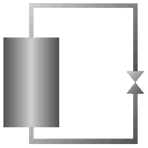

| Custom Page Example | ||
|---|---|---|
|
This is an example custom page showing the different possible elements you can put on a custom page. It can be used to copy/paste to your own custom page. Most elements use the /Runinfo/Run number variable in the ODB simply because this variable is there by default. Changing the run number will then change these displays in real-time. The source code of this page is contained in midas/resources/custom_example.html. Find a full description of the midas custom page structure and tags in the documentation. |
||
| Tag | Example | Description |
| modb | This tag is invisible and gives you a "hook" to execute a JavaScript function if a value in the ODB changes. If you change /Logger/Write data in the ODB, a dialog box will appear here. | |
| modbvalue | Displays /Runinfo/Run number | |
| Displays /Runinfo/Run number with the possibility to edit it directly by clicking on it | ||
| Displays /Runinfo/Run number in hex format | ||
| Displays /Runinfo/Run number in binary format | ||
| Display /Runinfo/Start time as string | ||
| modbcheckbox | Display /Logger/Write data as checkbox, user can change it by clicking on it | |
| modbbox | Box displays green if /Logger/Write data is true, otherwise red | |
| modbhbar / mhaxis | Draw a horizontal bar depending on /Runinfo/Run number. Left is 0, right is 10. Show value inside bar. | |
| Same together with horizontal axis (mhaxis) | ||
| Same in logarithmic display | ||
| modbvbar / mvaxis | Draw a vertical bar depending on /Runinfo/Run number. Bottom is 0, top is 10. Linear and logarithmic. | |
| modbthermo | Draw a thermometer depending on /Runinfo/Run number. Bottom is -10, top is 30. Optional show scale and change color depending on avlue (blue below 9, red above 9. | |
| Same with white background color instead of being transparent. | ||
| modbgauge | Display gauge depending on /Runfino/Run number. Optionally with scale. | |
|

|
Complex example with underlying gif image, a vertical bar inside the tank, a thermometer inside the tank and a value next to the valve, all depending on /Runinfo/Run numberl | |
| modbbuttons which change /Runinfo/Run number directly. Note how the displays above change if the run number gets changed. The same can be achieved by changing the run number by any other program such as odbedit. | ||